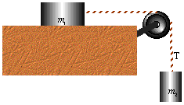

Question #1
In the following figure has a mass of 2.5kg and has a mass of 1.6kg. a) ignoring friction, what are the acceleration and tension in the connecting cord? b) Repeat this exercise with a frictional force of 8.0Nt for .

![[Graphics:../Images/index_gr_12.gif]](../Images/index_gr_12.gif)